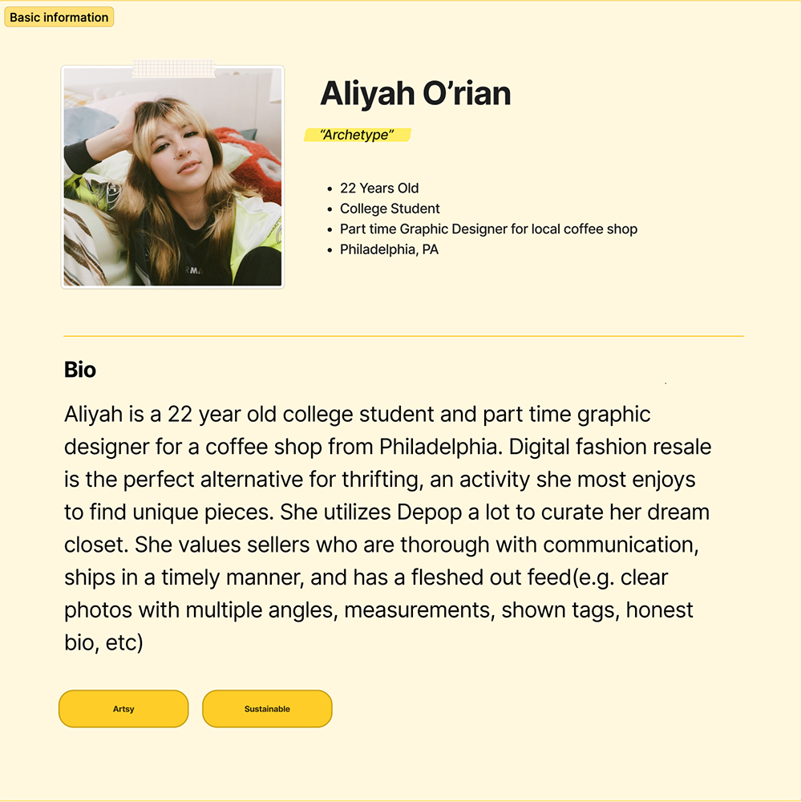

Depop is a diverse and easily accessible fashion marketplace that allows individuals to buy, sell, discover, and gain inspiration from second hand fashion. There is a classist/socially judgemental stigma around secondhand shopping; however, Depop's mission strives to show it can be just as rewarding as buying new items.
Many people launching businesses use Depop as a debut platform and many sell commissionable fashion pieces. In order to accommodate the buyer and seller, I've performed user research to make the checkout process even more seamless and efficient for maximum user experience and retention rate.
Depop lacks variation fields for buyers interested in products from shops that provide custom commissions. Direct messaging makes the process inconvenient and prolonged for both parties.
To reduce buyer and seller frustration, I used UX Research and Design strategies to ensure a seamless user experience and lock in retention rates, leading to increased revenue for small business selling on Depop.
This platform is mainly utilized by Gen Z, people aged 14 to 29 in 2026, with a staggering 90% of active users being under 26.

To reduce buyer and seller frustration, I used UX Research and Design strategies to ensure a seamless user experience and lock in retention rates, leading to increased revenue for small business selling on Depop.
Depop is a diverse and easily accessible fashion marketplace that allows individuals to buy, sell, discover, and gain inspiration from second hand fashion. There is a classist/socially judgmental stigma around secondhand shopping; however, Depop’s mission strives to show it can be just as rewarding as buying new items.